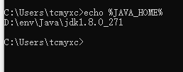
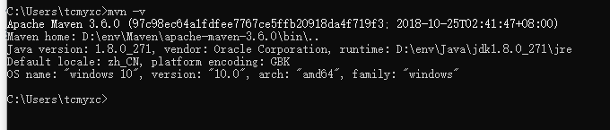
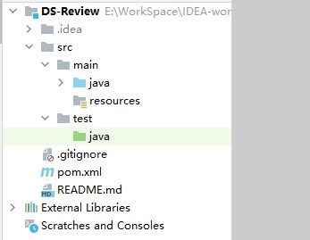
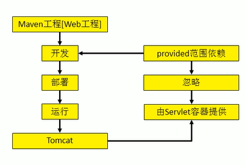
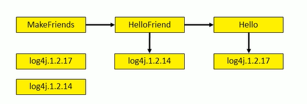
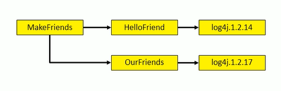
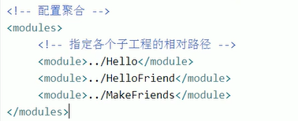
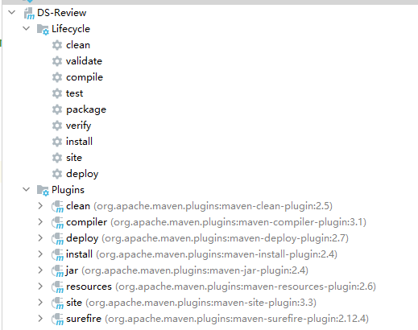

Maven学习笔记
是什么？
服务于Java平台的自动化构建工具
何为构建？
- 编译
- 部署
- 搭建
BS项目最终运行的是动态 Web 工程编译的结果，不是这个工程本身
构建过程的各个环节：
- 清理：清理旧的字节码文件
- 编译：编译成字节码文件
- 测试：自动测试
- 报告：测试程序执行的结果
- 打包
- 安装：Maven的特定概念——将打包得到的文件复制到仓库中的指定位置
- 部署：部署工程到服务器
如何安装？
1、检测JAVA_HOME环境变量

2、解压Maven压缩包
- 路径需要非中文、无空格
3、配置Maven环境变量
- MAVNE_HOME或者M2_HOME
4、查看

核心概念
- 约定的目录结构
- POM
- 坐标
- 依赖（最重要）
- 仓库
- 生命周期/插件/目标
- 继承
- 聚合
1、目录结构
1 | Hello |

为什么要约定目录结构？
约定大于配置
配置大于编码
静态导入声明从类中导入静态成员，并允许它们在没有类引用的情况下使用。
2、常用命令
必须进入 pom.xml 的所在目录执行命令
mvn clean
mvn compile
mvn test-compile
mvn test
mvn package
mvn install：安装编译好的工程到Maven仓库
mvn site：生成站点
编译结果在 target 目录
3、POM
Project Object Model：项目对象模型
核心配置文件
4、坐标
可以使用三个坐标在仓库中唯一定位一个项目
- groupid：公司或组织域名倒叙+项目名
- artifactid：模块名
- version：版本
5、仓库
分类：
本地仓库
远程仓库
- 私服：搭建在局域网里的，为局域网范围内的所有Maven工程服务
- 中央仓库
- 中央仓库的镜像
仓库的内容：
- Maven自身需要的插件
- 第三方框架或者工具的jar包
- 我们自己开发的Maven工程（mvn install）
第一方：JDK
第二方：我们自己
6、依赖
Maven解析依赖的时候会到本地仓库找那些项目依赖的包
依赖的范围：
- compile：对主程序、测试程序都有效，参与打包
- test：只对测试环境有效，不参与打包
- provided：对主程序、测试程序都有效，不参与打包

依赖的传递性：
直接依赖的依赖也会被传到本项目（也不一定都能进来，test 和 provided 不能进来）
好处：不需要在每个模块都声明依赖，可以从别的导入
依赖的排除：
不想要的可以排除
1 | <exclusions> |
依赖的原则：
作用：解决模块工程之间依赖冲突问题

路径最短优先（选1.2.14）

如果路径相同（先声明的优先）
统一管理依赖的版本：
手动一个个改太麻烦
建议方式：
- 使用
properties标签，标签内使用自定义标签统一声明版本号 - 在需要依赖版本的地方，使用
${自定义标签名}对版本号进行引用
properties标签，只要需要统一声明的场合，都可以自定义
依赖的继承
在父工程中声明依赖，子工程就会继承父工程的依赖
1、创建一个Maven工程，打包的方式为 pom
2、在子工程中声明对父工程的引用
1 | <parent> |
3、在子工程中删除重复内容
4、只需在父工程中声明依赖版本
将父项目中的 dependencies 标签，用 dependencyManagement 标签括起来
其实用IDEA，添加子模块也行
依赖的聚合
作用：一键安装各个模块工程
配置：把某个工程作为聚合工程，在总的聚合工程中 使用 modules /module 标签组合，指定模块工程的相对路径即可

使用：在聚合工程上使用 mvn install
7、生命周期
- 构建环节的顺序不能打乱
- 每一个生命周期都会从最初的阶段执行

Web工程的自动部署
使用 build 标签，里面进行配置，可以使用 cargo